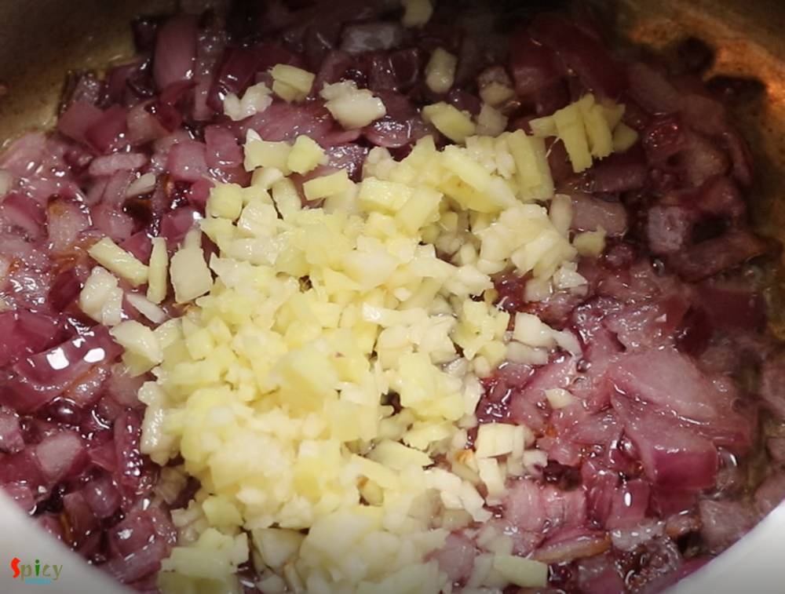
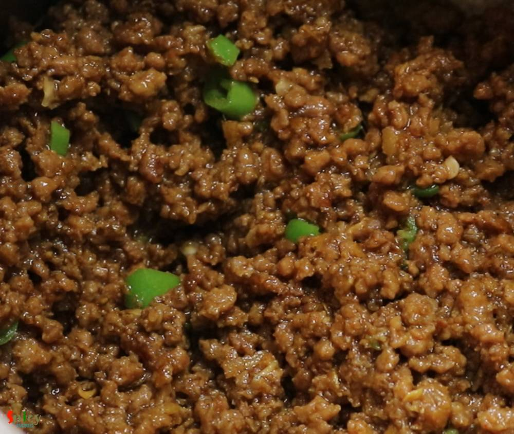
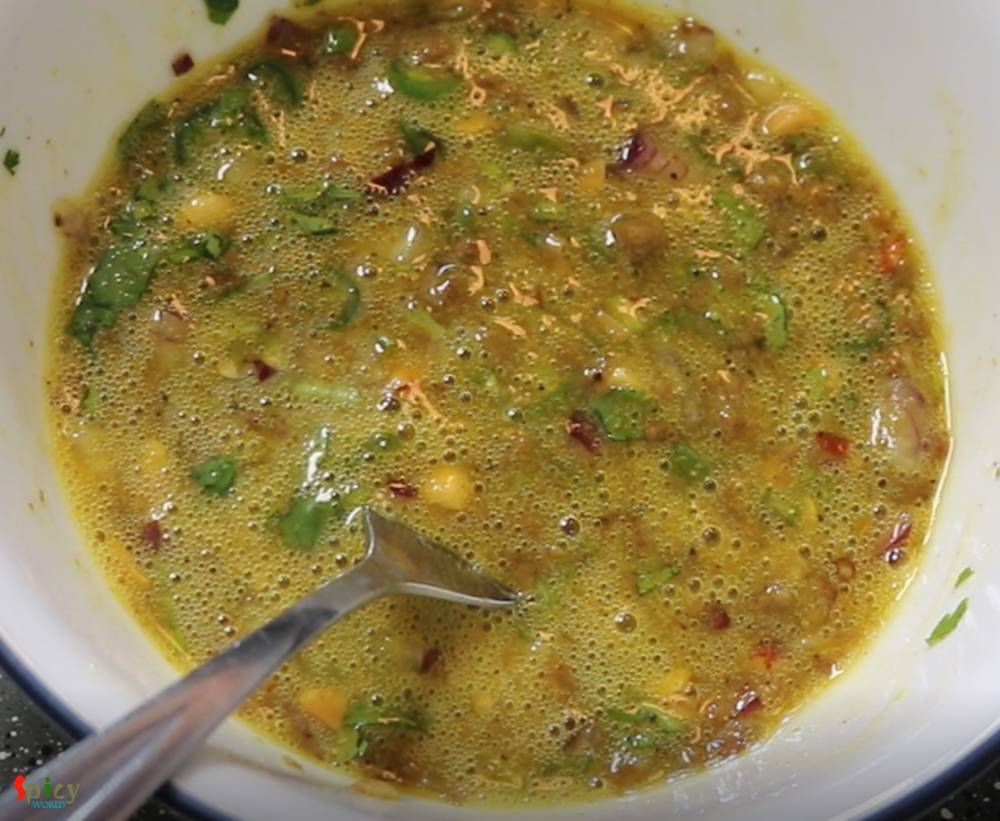
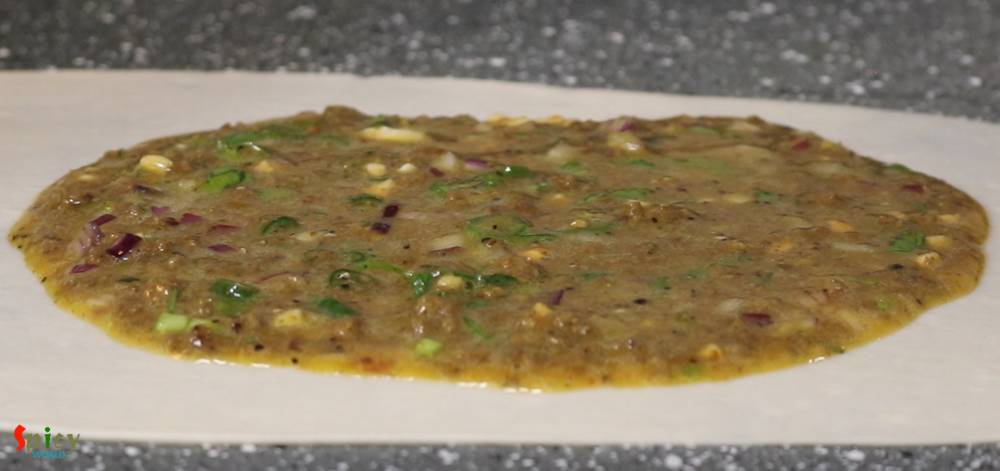
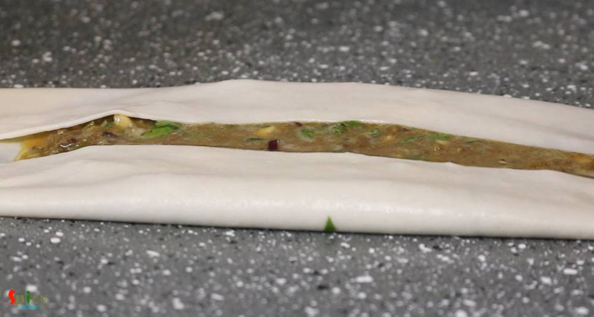

Simple and Easy Recipes
Mughlai Keema Paratha / Moglai Porota
© 2016 Spicy World, Published on: Jan 31, 2019
Mughlai Keema Paratha is a very famous street food which has another name Keema Baida Roti. In Kolkata we call them 'moglai porota'. I made these parathas exactly like street style with minced meat, but you can skip that Keema part and keep the rest of the recipe same. The process is a bit lengthy but it is worth trying. I made dry potato curry along with mughlai paratha because these two goes very well with each other. I learned the recipe from my mother-in-law. She used to make this at evening without keema and we all enjoyed those very much. Here is the recipe with step by step clicks. Try this in your kitchen and let me know how it turns out.

Ingredients
- 300 grams of minced mutton or chicken.
- 1 small onion, finely chopped.
- 2 Tablespoons of chopped ginger and garlic.
- Salt as per your taste.
- Spice powder (1 Teaspoon of red chili powder, pinch of turmeric powder, 1 Teaspoon each of roasted cumin and coriander powder).
- 2 green chilies, chopped.
- 4 eggs.
- For Egg - half Teaspoon of black pepper powder, 1/4th cup of finely chopped onion, green chilies and coriander leaves.
- 7-8 peanuts, chopped.
- 1.5 cups of all purpose flour or maida.
- 1 Teaspoon of baking powder or Eno salt.
- Warm water.
- 2 cups of cooking oil.


Steps
From the above mentioned proportion you will get 4 parathas. In a pressure cooker, heat 3 Tablespoons of oil.
Add chopped onion, fry for 3-4 minutes.
Then add chopped ginger and garlic. Fry for 2 minutes.
Then add minced meat, cook for 4 minutes.
Then add some salt and all of the spice powder. Mix well for 3-4 minutes.

Add 1/4th cup of water, mix well and close the cooker.
Cook until 3-4 whistles come and let the pressure release on its own.
After opening the lid, you will find some water in keema.

Cook on high flame for 4-5 minutes or until keema becomes dry.
Lastly add chopped green chilies, mix well and turn off the heat.
For the dough, mix pinch of salt, baking powder or eno salt and 3 Tablespoons of oil with all purpose flour or maida very well.

Then gradually add warm water and start making a soft dough.
Knead the dough for 3-4 minutes and make it smooth.

Apply 2 Teaspoons of oil all over the dough and then cover it with a damp cloth for 30 minutes.

In the meantime, break an egg in a bowl.
Add pinch of salt, pinch of pepper powder, 2 Teaspoons of chopped onion, half Teaspoon of chopped green chilies, 1 Teaspoon of chopped coriander leaves, 3 Teaspoons of cooked keema and half Teaspoon of chopped peanuts.

Mix everything very well and keep it aside. This filling is for one Mughlai Paratha.
Before making the paratha keep a kadai with 2 cups of oil on medium heat.Knead the dough one more time, take little bigger than lemon size portion ball from the dough.
With the help of some oil, start rolling the ball. Roll it as thin as possible.

In the center pour the egg mixture and spread it little bit.
Now first fold the two sides.
Then fold the lower and upper part and make an envelope.

Immediately hold the 4 corners and drop it carefully in medium hot oil.
Fry each side 3-4 minutes on medium heat otherwise the inner side will remain raw.
Then take it out from oil and keep on a tissue paper.

Cut the mughlai paratha into small pieces and serve immediately.
Your Mughlai Keema Paratha is ready to serve.
Serve this hot with spicy potato curry, ketchup, chili sauce and salad.
")